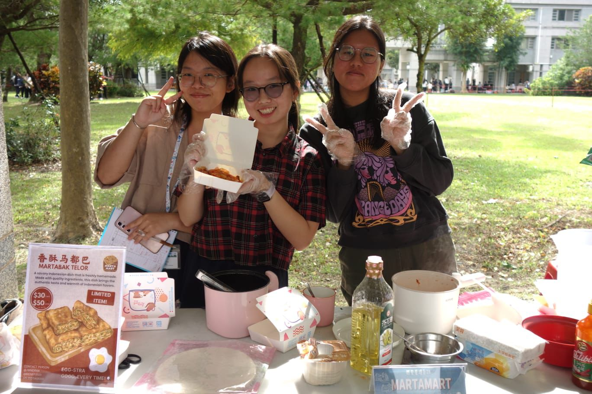
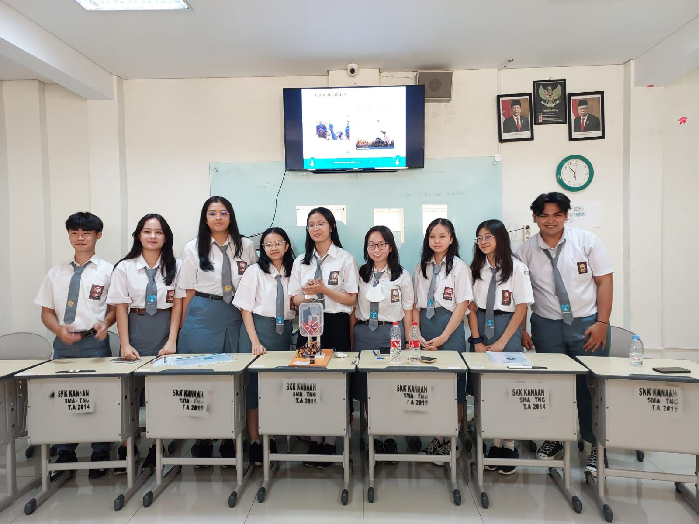
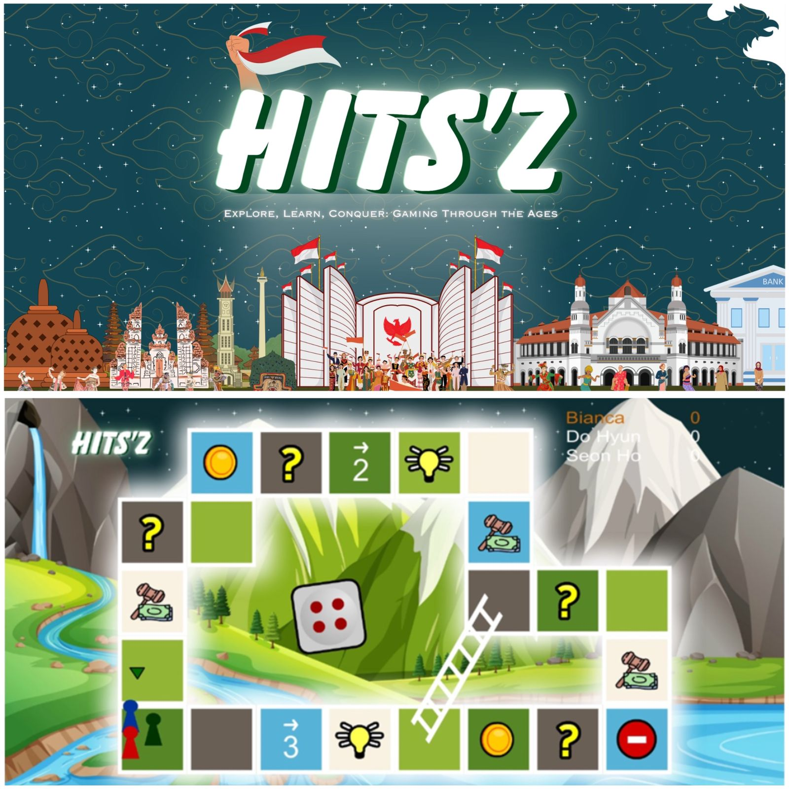
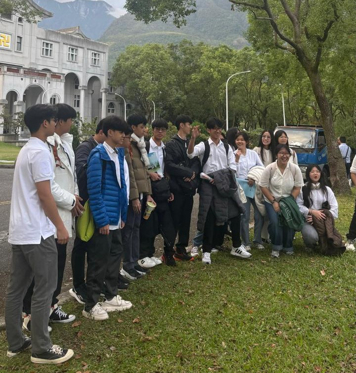
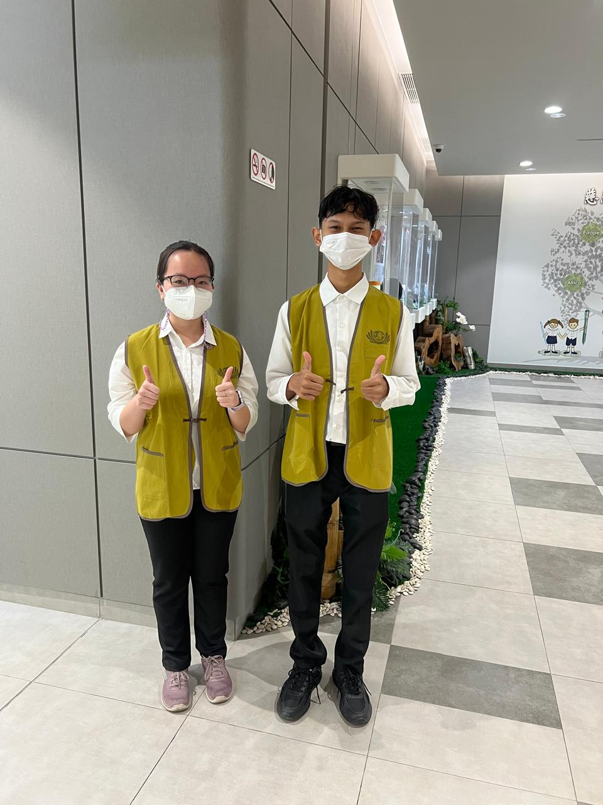

Business Stall Project called "Sweet Relief". We are selling handmade flowers, snack cake pops, and polvoron to raise funds for donation to Myanmar.

Organized a business stall project at a university event called “Martamart” selling martabak telur, as part of a class project to gain real experience in entrepreneurship.
As part of a project to create simple and creative games, I decided to make a game called “Ball and Paddle.”
As part of a project to create simple and creative games, I decided to make a game called “Adjusting Angle.”

Conducted a project and report titled “Implementation of the Government Card System
Technology as an Effort to Develop the Rice Subsidy System in Pandeglang Regency” involving research and building a prototype tool (2023).

Conducted a project and report titled “Development of a Mobile-Based Interactive Application for Learning History” involving research and creating a functional prototype (2024).

Participated in a university program to accompany students from Pahoa School, Indonesia, during their campus visit for two days.

Becoming a volunteer at Tzu Chi Hospital Indonesia, Jakarta